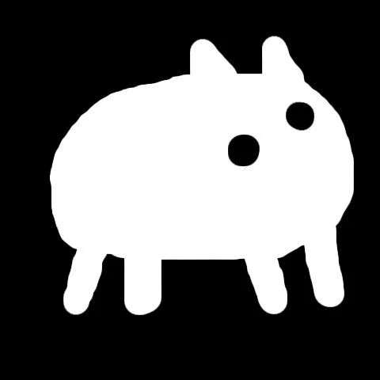
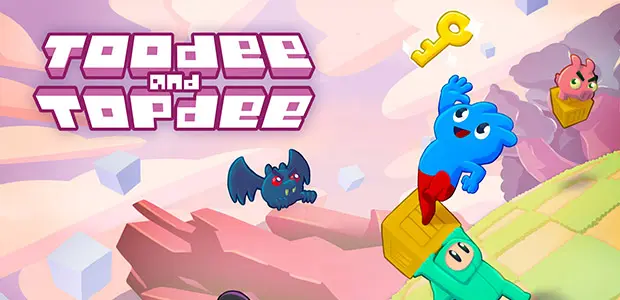
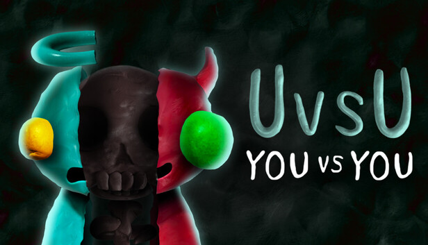
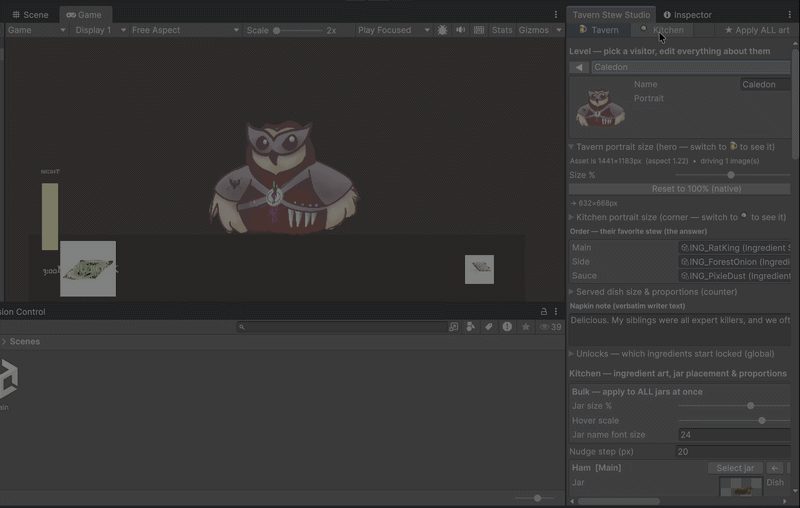
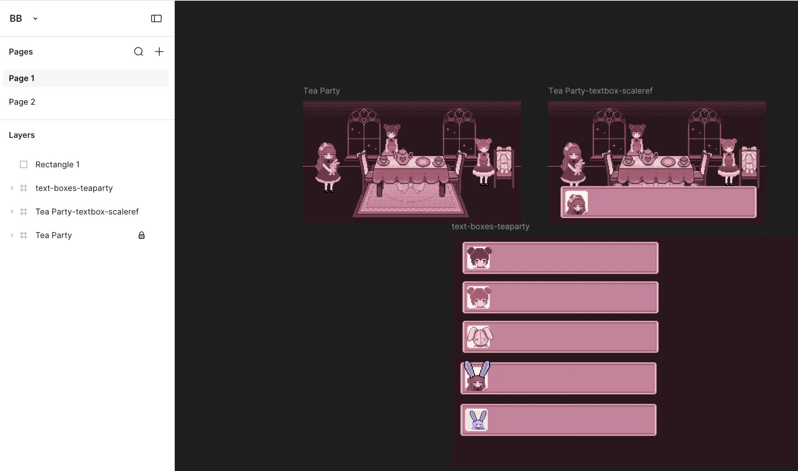

CLAUDE CODE
FOR GAME JAMS
How AI changed the 48-hour game · @yan · yanaifraimov.itch.io
▶ PRESS SPACE TO START
Claude Code didn't make the games —
it built the tools that let a tiny jam team make the games.
Two real jam repos tonight. In both, the AI's most valuable output wasn't gameplay code.
A jam is not a hackathon
🏢 Hackathon
- Functional MVP
- Solves a business problem
- Ends in a pitch deck
🎮 Game Jam
- 48–72 hours, from scratch
- Secret theme revealed at start
- A brutal, beautiful search for fun
- Code + art + music + human emotion, before the clock runs out
The loop every jammer knows

Weekend experiment → commercial hit


Hollow KnightTeam Cherry · Ludum Dare's Hungry Knight


CelesteMaddy Thorson · 4-day PICO-8 jam


Baba Is YouArvi "Hempuli" Teikari · Nordic Game Jam 2017
…and Superhot began as a 7DFPS jam entry (2013).
The same magic, in our jam rooms 🇮🇱

Toodee and Topdee
Gonen & Ori Gutholtz

UVSU
Gonen Gutholtz

Veggie Brawl ★ GMTK winner @ Xsolla Club
Yoav Kagan · Shelly Rosenbaum · Shahar Tropp · Tal Rozenberg · Shachar Dahari
The AI revolution in the jam room
- GGJ 2025 → GGJ 2026 → GMTK 2026: the vibe completely changed — less 3 a.m. panic-typing, more time at the art table
- The roles have flipped: coding was the bottleneck that dictated scope. Now artists & designers are the most precious resource in the room
- AI writes the boilerplate; humans write the soul
- Tonight's evidence: in both of my jam repos, the AI's best output was editor tools, build pipelines & test instruments — work a jam team never had time for before
Tavern Stew · GMTK jam · Unity

TavernStewStudio — a bespoke EditorWindow (⌘⇧T)
- Point & click: read the customer, cook the right stew
- UI/Canvas-heavy · me (dev/designer) + artists
- We didn't just build the game —
we built the factory
Custom dev tools > game code
TavernStewStudio
Each customer is a level: pick a visitor → portrait, order, napkin note & unlocks load into the scene. No Play mode. Sprite fitting + bulk fixes.
AuditSlots
Scans every [SerializeField] in the scene — an empty slot is a visible bug. Caught broken refs after every scene rebuild.
BuildWebGL
itch.io-ready WebGL build (Gzip + fallback, responsive 16:9) → zip → upload. Snapshot every milestone.
Scene as code
BuildMainScene · WireScene · CreateJarPrefab — we redid the whole layout three times as a re-run, not an afternoon of dragging.
★ Insight: giving artists a one-click way to test assets in-scene eliminated the "waiting for the programmer" bottleneck.
Then vs. now: talking to Unity
THEN · the workaround era
- Ivan Murzak's Unity-MCP — the community trailblazer
- Generated 126 agent skills in
.claude/skills/ - Claude reads the console, creates GameObjects, screenshots Scene View to check its own work
- Pre-bridge: disposable editor scripts via batch-mode CLI — reviewable as code first
NOW · native & official
- Unity CLI + unity-agent-plugin — official Claude Code plugin
- Claude runs C# live inside a running Editor
- No project recompile · no domain reload
- The AI workflow is native, structured, far less fragile
Tech beats worth stealing
- Every number is data: ScriptableObject assets (GameConfig, feel, story) — zero hardcoded values, and SO edits persist through Play mode → that's the tuning workflow
- Wiring:
[SerializeField]slots + C# events — noFind(), no singletons → which is exactly what lets AuditSlots verify the scene mechanically - Process:
BUILD_PLAN.mdis the single source of truth ·PROGRESS.mdupdates after every change - 22 gameplay scripts declared FINAL — any change needs my explicit approval. The human stays the approval gate.
Bunny Boo · Brackeys "Trust No One" · pure web
- Trust-horror: a bunny tells you things… that may be lies 🐰
- Sometimes Unity is too heavy → Claude helped build a standalone web engine: one
index.html, playable on GitHub Pages & itch.io - A GDD skill structured the design first: floors, the teach → contradict → betray arc, and an explicit list of open questions
- The testbed exists to answer those questions — every feature traces back to one
An RPG-Maker editor… in the browser
?mode=designer— click-select, drag-move, snap grid, hitbox overlay, Ctrl+Z- Floating inspector: x/y/size/reach/label/scale/z-order
- T flips into playtest and back — artists drag, snap and feel the room instantly
- Music window: global track + per-room overrides
- Locations, music, text — all data, not code
bbpt-mock/?mode=designer
drag a chest → inspector → T to play → T back → SHARE LINK
Figma is the level editor

The "BB" file: tea-party room + dialog skins, drawn at native 320×180
- Frames at native res → layer x/y transfer verbatim
- Claude read Figma, baked the room 1:1 — diffed to 0 differing pixels
- Dialog boxes & portraits are the artists' frames (tea skin / horror skin)
- Gotchas handled: flipped-layer origins · cropped-fill exports · flood-fill · palette-snap to 6 colors
- New art =
art/runtime/+npm run assets— one step, all jam
Testing. In a game jam?!
- 34 Playwright smoke tests drive the game end-to-end via a
window.BBhook — boot, seed determinism, full floor flows, session export - Playtests are URL-driven:
?scenario=bluff&seed=9— seeded RNG, every run reproducible - Session recorder logs each claim / decision / ms-to-decide → EXPORT SESSION = JSON with detection-rate & false-alarm metrics
- One
DEFconfig: URL params ▸ localStorage ▸ defaults — every tunable shareable & exported · COPY CONFIG emits Unity-shapedTuningSOJSON - Insight: tests in a 48-hour jam used to be a joke. Claude writing regression tests is the luxury that saves the final hours from a debugging nightmare.
What stays human
Scope & ambition
AI lowers the coding barrier — it does not speed up the creation of soul. A small, polished game always beats a massive, broken one.
The ultimate forcing function
Jams teach you to fail fast and abandon bad ideas. AI just makes each iteration faster — use the speed to try more ideas, not to ship bigger ones.
Collaboration > automation
AI is a fantastic co-pilot, but community is your compass — artists defining the look pixel-for-pixel, playtesters settling arguments with data, a teammate saying "this is hideous" and being right.
"Claude Code never decided
what the game was.
It just made sure that deciding
was the only hard part left."
Take the links home
| Unity CLI | unity.com/blog/meet-the-unity-cli |
| Unity × Claude Code | github.com/Unity-Technologies/unity-agent-plugin |
| Unity-MCP | github.com/IvanMurzak/Unity-MCP · Ivan Murzak |
| MCP | modelcontextprotocol.io |
| Claude Code | docs.claude.com |
| GDD skills | Claude-Code-Game-Studios |
| SO architecture | Ryan Hipple's Unite '17 pattern |
| Level-as-data | LDtk · Tiled · Bitsy |
| Playwright | playwright.dev |
| itch.io tooling | HTML5 docs · butler |
| My games | yanaifraimov.itch.io |
| These slides | github.com/Yana205/claude-code-for-game-jams |